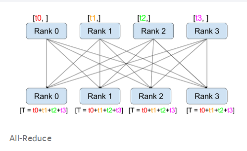
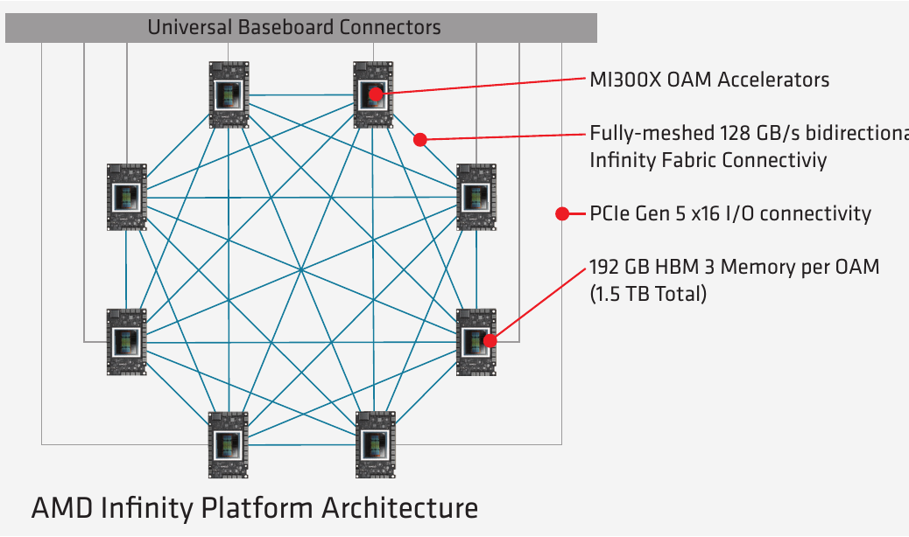
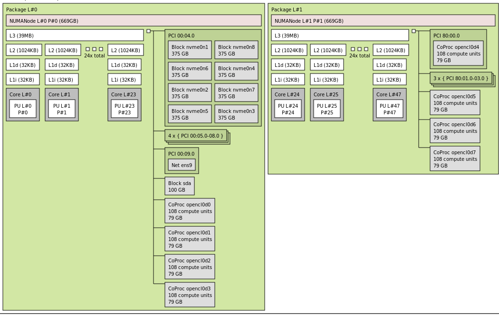
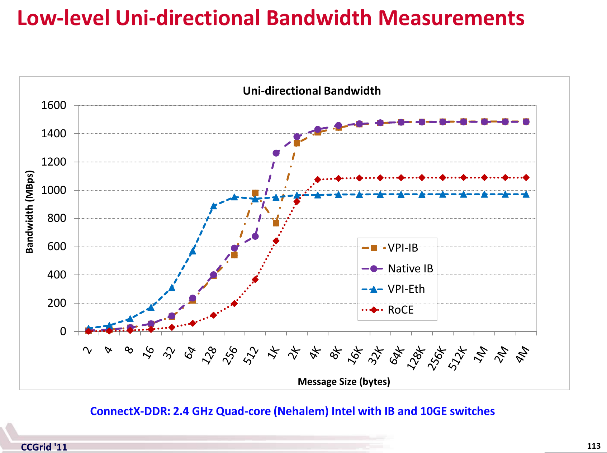
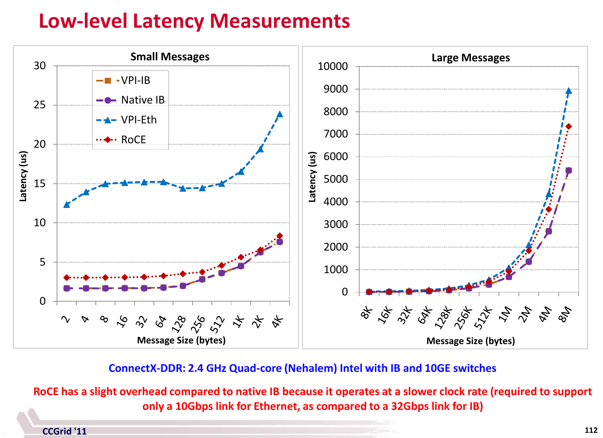

🛜 Network
Inter-node and intra-node Networking Hardware
Subsections:
This chapter is a WIP
It’s not enough to buy/rent expensive accelerators to train and infer models fast. You need to ensure that your storage IO, CPU and network are fast enough to “feed the accelerator furnace”. If this is not ensured then the expensive accelerators will be underutilized leading to lost $$, slower training time and inference throughput. While it can be any other of the mentioned components, the network is often the bottleneck during the training (assume your DataLoader is fast).
If your model fits on a single accelerator, you have little to worry about. But nowadays most models require several accelerators to load and LLM/VLM models require multiple compute nodes for training and some even for inference.
Most compute nodes contain 8 accelerators, some 4, others 16, and even more accelerators and recently there are some that have one super-accelerator per node.
When the model spans several accelerators and doesn’t leave a single node all you need to worry about is fast Intra-node networking. As soon as the model requires several nodes, which is often the case for training as one can use multiple replicas to parallelize and speed up the training, then fast Inter-node networking becomes the key.
This article covers both types of networking hardware, reports their theoretical and effective bandwidths and explains how they inter-play with each other.
Glossary
- DMA: Direct Memory Access
- EFA: Elastic Fabric Adapter
- HCA: Host Channel Adapter
- IB: Infiniband
- MFU: Model Flops Utilization (e.g.
mfu=0.5at half-precision on A100 comes from getting 156TFLOPs, because peak half-precision spec is 312TFLOPS, and thus156/312=0.5) - NIC: Network Interface Card
- OPA: Omni-Path Architecture
- RoCE: RDMA over Converged Ethernet
- RoE: RDMA over Ethernet
- VPI: Virtual Protocol Interconnect
- RDMA: Remote Direct Memory Access
- xGMI: Socket to Socket Global Memory Interface
Speed-related: - Bi-directional, Duplex: a transmission from one point to another in both directions A <-> B, typically 2x speed of unidirectional - GBps, GB/s: Gigabytes per secs (1GBps = 8Gbps) transferred in a channel - GT/s: GigaTransfers per second - the number of operations transferring data that occur in each second. - Gbps, Gb/s: Gigabits per secs (1Gbps = 1/8GBps) transferred in a channel - Unidirectional: a transmission from one point to another in one direction A -> B
Understanding why inter-node network speed is of a huge importance
This is probably one of the most important multi-segment section that you really want to understand well. While it seeks out to show how important the inter-node speed is, to build up the case it’ll teach on the way many important training-related concepts.
The basics
First, let’s get a bit of a feeling what all those Gbps/GBps practically mean.
If your model is 80B parameter large, and you need to transmit every parameter or a gradient on the network even once in float32 (fp32) format, which requires 4 bytes per parameter, so you need to send 80*4 320GB of data, or 2560Gb (*8). If your network’s bandwidth is 200Gbps it will take 12.8 seconds (2560/200) to transmit. And if you had 1600Gbps network then it’d take only 1.6 seconds. Why does it matter?
1-GPU training
Let’s start with a much smaller model of say 2B params, to train it you’d need at least 18 bytes per parameter in mixed half precision. So 18*2 36GB of memory just for model weights, optimizer states and gradients. Plus you need additional memory for activations and it’ll depend on the batch size and sequence length. But with 80GB A100 GPU we can definitely train this model on a single GPU.
We then assume for the moment that the DataLoader is fast enough to be negligible in duration compared to the compute time. And thus we get a close to a perfect MFU (Model FLOPs Utilization):
[DL][ compute ][DL][ compute ][DL][ compute ]
---------------------------------------------------> time
|<--iteration-->||<--iteration-->||<--iteration-->|which means that the GPU just needs to do many matmuls and it’d do it amazing fast. In this situation you get the highest ROI (Return on Investment).
Single node training
The previous situation was fantastic due to the close to perfect MFU, but you realize that the training on a single GPU is going to take quite some time, since we are in AI race you’d probably want to finish the training sooner than later. So you’d ask - can I train the model on 8 GPUs instead, and the answer would be - yes, of course. With one caveat - at the end of each iteration you’d need to sync the gradients between the 8 processes (each process for a single GPU), so that each participating process of the training can benefit from what the other 7 have learned during the last iteration.
footnote: You could, of course, use less than 8 GPUs, it is just that most NVIDIA GPU-based compute nodes these days have 8 GPUs so why not get the best return on investment.
footnote: in the ideal world the training on 1 gpu for 8 durations of time, should cost the same as training on 8 gpus for 1 duration of time. That’s one would expect to spend the same $$ and to finish 8 times faster. But because of data synchronization requirements.
If the experimental model still contains 2B params like in the previous section and grads are in fp32 then the training program needs to send 8GB (2G * 4B) of data on every iteration. Moreover, since syncing the gradients requires an all_reduce collective collective - it needs to transmit the data twice - the first time sending the gradient data by each gpu, computing the sum of gradients and send this value back to each participating gpu so that each training process will benefit from the learning advancements each of its peers made in the last iteration.
Here is the all-reduce collective visualized:

(source)
So we need to send 8GB twice, which means we need to send 16GB of data.
footnote: and to be exact the 2x comms volume for all-reduce is really 2*(n-1)/n where n is the number of participating gpus. So if n=2, the coefficient is just 1 since 2*(2-1)/2=1 and 1.75 for n=8 since 2*(8-1)/8=1.75 and it becomes already very close to 2 at n=64.
footnote: there is also the important issue of latency of the network - which is multiplied several times due to how data is gathered from all participating gpus. But, given that here we are moving a very large payload the latency contributes a very small overhead and for simplicity can be ignored.
How long will it take to send 16GB of data?
- A100 @ 300GBps:
16/300= 0.053 secs - H100 @ 450GBps:
16/450= 0.035 secs
which is incredibly fast!
And here is how our timeline will look like:
[DL][ compute ][comms][DL][ compute ][comms][DL][ compute ][comms]|
-----------------------------------------------------------------------> time
|<---- iteration ---->||<---- iteration ---->||<---- iteration ----->|oh and this whole synchronization protocol is called DDP (DistributedDataParallel) in the PyTorch lingo.
Comms and compute overlap
Even with this really fast comms the network still creates a bottleneck and leads to a short idling of the gpus. To solve this issue the advanced algorithms implement an overlap of comms and compute. Until now we approached the problem as one single transmission, but in reality each model is made of many layers and each layer can transmit the gradients it has computed, while the next layer is computing its gradients. So if you look at the level of the model, what happens in the backward path is:
[ compute ][ compute ][ compute ]
[comms] [comms] [comms]
---------------------------------------------> time
<- layer -1 ->|<- layer -2 ->|<- layer -3 ->|so once the last layer (-1) computed its gradients it all-reduces them while the 2nd to last layer performs its backward, and so on, until the first layer finished with gradients and it finally sends its gradients out.
So now you understand how overlapping works, So we can now update our bigger picture diagram to be:
Now our timing diagram becomes very similar to the diagram we had for a single gpu:
[DL][ compute ][DL][ compute ][DL][ compute ]
[ comms ] [ comms] [ comms]
---------------------------------------------------> time
|<--iteration-->||<--iteration-->||<--iteration-->|and we hope that comms are faster than DL+compute, since if they aren’t faster than we have the following gpu idling gaps:
[DL][ compute ][idle][DL][ compute ][idle][DL][ compute ][idle]
[ comms ][ comms ][ comms ]
----------------------------------------------------------------------> time
|<--- iteration --->||<--- iteration --->||<--- iteration --->|Calculating TFLOPS
Calculating TFLOPS answers the question of how long will it take to perform a compute.
There is a bit of nomenclature confusion here as TFLOPS as the final s sometimes means sec and at other times just ops.
For example, when you read, the A100 spec the TFLOPS there means TeraFloatingPointOperations per second.
So let’s define these abbreviations exactly:
- TFLOPS - TeraFLoatingpointOPerations per Second (another way is TFLOP/s)
- TFLOP - TeraFLoatingpointOPerations (or TFLOPs - lower case
sbut it’s already confusing)
Also see the wiki page for more clarifications.
For GPT-family of decoder transformers models we can use the math described in this BLOOM-176 docs:
Here is how many TFLOP are processed per second:
tflops = model_size_in_B * 4 * 2 * seqlen * global_batch_size / (time_in_sec_per_interation * total_gpus * 1e3)This formula assume one uses activation recomputation which saves GPU memory while introducing a smallish overhead. If one doesn’t use it then replace 4 with 3 as the model has to do only 1x compute per forward and 2x per backward (since the grads are calculated twice - once for inputs and once for weights). With activation recomputation the forward is done twice and thus you have an additional path which leads to a multiplier of 4 instead of 3
footnote: activation recomputation and gradient checkpointing both refer to the same technique.
so let’s remove the time component, which will give us the total TFLOP
tflop = model_size_in_B * 4 * 2 * seqlen * global_batch_size / (total_gpus * 1e3)So let’s say we have: - seqlen=2048 (sequence length) - global_batch_size=16
and we already defined: - total_gpus=8 - model_size_in_B=2
This gives us:
tflops = 2 * 4 * 2 * 2048 * 16 / (8 * 1e3) = 65.536 TFLOPSo if we do a mixed half-precision training and most of the operations are done in half-precision then we can roughly say that we do 312 TFLOPS on A100 and usually a well optimized framework on a well-tuned hardware will do at least 50% MFU - that is it’ll be able to compute at about 1/2 peak performance.
footnote: It’s a ~3x 989 TFLOPS on H100 (scroll to the end) and also it shows a misleading 2x numbers for sparsity so you have to mentally divide it by 2.
So continuing this train of thought it means that the setup will have about 156TFLOPS - and so it’ll take 0.42 secs to process a single iteration (2x forward and 2x backward compute) if we ignore the overhead of the DataLoader (which we hope is close to instant).
Earlier we said that a typical A100 node has an intra-node NVLink connection of 300GBps, and thus we said that to send 16GB of grads will take 16/300 = 0.053 secs.
And we measured our compute to be 0.42 secs, so here we have a problem as 0.053 > 0.42 so the comms will be slower than compute and the network is a bottleneck.
You can now do several thought experiments - for example if you halve the batch size or the sequence length you will halve the compute time.
footnote: this is a very rough suggestions since GPUs work the fastest when the matrices they multiple are huge. But this is good enough for a simplified thought experiment we are having here. In reality halving the dimension will not halve the compute time.
OK, but hopefully at this point it’s quite clear that if you remain at the boundaries of a single node, you don’t need to worry about your GPUs idling.
But what if you want to speed up the training even more and throw say 4x 8-gpu nodes at it. (and of course you don’t have a choice but to use multiple nodes if you have a much larger model). Suddenly, the comms can become an even bigger bottleneck.
Multiple node training
So here we are continuing with the idea of 2B param model and we will now use 32 gpus across 4 nodes to speed up the training even more.
While each group of 8 gpus is still connected with super-fast NVLink technology, the inter-node connections are usually in an order of magnitude slower.
Let’s say you have a 200Gbps connection. Let’s repeat the math from the previous section of how long it’ll take to reduce 16GB of gradients.
16GB is 128Gb, and so at 200Gbps this will take 0.64 seconds.
And if stick to the compute taking 0.42 seconds, here we end up with comms taking longer than compute since 0.64 > 0.42.
Let’s bring both use cases together:
| nodes | comms | compute | comms is a bottleneck |
|---|---|---|---|
| 1 | 0.027 | 0.42 | no |
| 4 | 0.64 | 0.42 | yes |
on this 200Gbps inter-node setup the comms are 23x slower than the same performed on an intra-node NVlink connections.
In this case even though we still have the much faster NVLink connection, we don’t really benefit from it, since the whole ensemble communicates at the speed of the slowest link. And that slowest link is the inter-node connection.
So in this particular situation if you were able to get a 400Gbps inter-node the speed would double and the comms will finish in 0.32 secs and thus will be faster than that 0.42 secs the compute would take.
footnote: you will never be able to get the advertised speed fully on the application level, so if it’s advertised as 400Gbps in the best case expect to get 320Gbps (about 80%). So make sure to take this into the account as well. Moreover, depending on the payload of each collective - the smaller the payload the smaller the actual network throughput will be.
And remember this was all handling a pretty tiny as considered these days 2B param model.
Now do the same math with 20B and 200B parameter model and you will see that you need to have a much much faster inter-node connectivity to efficiently scale.
Large model training
Of course, when we train large models we don’t use DDP, because we simply can’t fit the whole model on a single gpu so various other techniques are used. The details are discussed in a dedicated chapter on Model Parallelism, but the only important thing to understand immediately is that all scalability techniques incur a much larger comms overhead, because they all need to communicate a lot more than just gradients. and therefore the amount of traffic on the network can easily grow 3x and more as compared to the DDP protocol overhead we have been exploring so far.
It can be difficult to do even approximate math as we did in this chapter, because the actual compute time depends on the efficiency of the chosen framework, how well it was tuned, how fast the DataLoader can feed the batches and many other things, therefore there is no standard MFU that one can use in the math and you will discover your MFU when you configure and run the first few steps of the large model training. and then you will read the Performance chapters and improve your MFU even more.
As I have shown in these sections it should be possible to be able to do a back-of-envelope calculations once you understand the specific scalability technique and its networking costs, so that you could know ahead of time which Inter-node network speed you need to require from your acquisition manager. Of course, you also need to understand the particular model architecture and calculate how many TFLOP it will take to do a single iteration.
Unidirectional vs Bidirectional (Duplex)
Most benchmarking / bandwidth measurement tools will report a unidirectional bandwidth. So be careful when you look at unidirectional vs. bidirectional (duplex) speeds. Typically the latter is ~2x faster.
If you measure the bandwidth on your setup and it’s about 40% of the advertised speed, carefully check if the advertised speed said duplex and if so half that and then your measured bandwidth should now be about 80% which is expected.
case study: for a while I couldn’t understand why when I run the nccl-tests all_reduce benchmark on an A100 node with advertised 600GBps intra-node speed I was getting only 235Gbps (40%) until Horace He kindly pointed out that I should be looking at unidirectional speed which is 300GBps, and then I get 80% of the theoretical spec which checks out.
Intra-node networking
There are multiple platforms/solutions out there that provide intra-node networking:
- Generic: PCIe
- NVIDIA: NVLink and NVSwitch
- AMD: Infinity Fabric
- Intel: Gaudi2
footnote: In the following sections pay close attention that 1 GBps = 8 Gbps.
footnote: also pay close attention to when the spec says unidirectional vs bidirectional (duplex) speeds - if you read an online spec and it doesn’t explicitly declare the directionality - look for an answer. I had to research many docs to figure it out in some of the tables below as some vendors conveniently omit this crucial information. I even had to edit a few wiki pages to add the missing information. Remember that for the vendors the bigger the better so almost always they will use the duplex number, which is 2x larger than unidirectional one.
PCIe
PCIe is a high-speed serial computer expansion bus standard that can be found even on the cheapest computer desktop.
| Interconnect | Lane/Direction | Lanes | Unidirection | Duplex |
|---|---|---|---|---|
| PCIe 4 | ~2.0 GBps | 16 | 31 GBps | 62 GBps |
| PCIe 5 | ~4.0 GBps | 16 | 63 GBps | 126 GBps |
| PCIe 6 | ~7.5 GBps | 16 | 121 GBps | 241 GBps |
| PCIe 7 | ~15.0 GBps | 16 | 242 GBps | 484 GBps |
If one compares the latest generations of different intra-node technologies (see the following sections) PCIe is usually an order of magnitude behind.
NVLink
- NVLink is a wire-based serial multi-lane near-range communications link developed by Nvidia. Here is the What Is NVLink blog post with more background on it.
I found the wiki pages quite difficult to follow, so I will try to help bring clarity into this.
Effective payload rate of Intra-node GPU-to-GPU communication hardware:
| Interconnect | Lane/Direction | Lanes | Links | Unidirection | Duplex |
|---|---|---|---|---|---|
| NVlink 2 | 6.250 GBps | 4 | 6 | 150 GBps | 300 GBps |
| NVlink 3 | 6.250 GBps | 4 | 12 | 300 GBps | 600 GBps |
| NVlink 4 | 6.250 GBps | 4 | 18 | 450 GBps | 900 GBps |
NVlink 2, 3 and 4 use the same hardware of 4 lanes of 6.250 GBps each per link. Each has a unidirectional bandwidth of 25GB/s per link, and therefore 50GB/s per duplex link. The only difference is in the number of links:
- NVLink 2 has 6 links =>
25* 6=> 150 GBps unidirectional and 300 GBps bi-directional - NVLink 3 has 12 links =>
25*12=> 300 GBps unidirectional and 600 GBps bi-directional - NVLink 4 has 18 links =>
25*18=> 450 GBps unidirectional and 900 GBps bi-directional
The largest PCIe 16x slot has 16 lanes. Smaller slots have less lanes, 1x == 1 lane.
As of this writing NVIDIA Hopper nodes typically come equipped with PCIe 5 and NVLink 4. So there NVlink is 7x faster than PCIe.
Let’s look at several examples of nodes and correlate the theory with reality.
If you use multiple GPUs the way cards are inter-connected can have a huge impact on the total training time. If the GPUs are on the same physical node, you can run:
nvidia-smi topo -mand it will tell you how the GPUs are inter-connected.
On a machine with dual-GPU and which are connected with NVLink, you will most likely see something like:
GPU0 GPU1 CPU Affinity NUMA Affinity
GPU0 X NV2 0-23 N/A
GPU1 NV2 X 0-23 N/Aon a different machine w/o NVLink you may see:
GPU0 GPU1 CPU Affinity NUMA Affinity
GPU0 X PHB 0-11 N/A
GPU1 PHB X 0-11 N/AThe report includes this legend:
X = Self
SYS = Connection traversing PCIe as well as the SMP interconnect between NUMA nodes (e.g., QPI/UPI)
NODE = Connection traversing PCIe as well as the interconnect between PCIe Host Bridges within a NUMA node
PHB = Connection traversing PCIe as well as a PCIe Host Bridge (typically the CPU)
PXB = Connection traversing multiple PCIe bridges (without traversing the PCIe Host Bridge)
PIX = Connection traversing at most a single PCIe bridge
NV# = Connection traversing a bonded set of # NVLinksSo the first report NV2 tells us the GPUs are interconnected with 2 NVLinks, and the second report PHB we have a typical consumer-level PCIe+Bridge setup.
Check what type of connectivity you have on your setup. Some of these will make the communication between cards faster (e.g. NVLink), others slower (e.g. PHB).
Depending on the type of scalability solution used, the connectivity speed could have a major or a minor impact. If the GPUs need to sync rarely, as in DDP, the impact of a slower connection will be less significant. If the GPUs need to send messages to each other often, as in ZeRO-DP, then faster connectivity becomes super important to achieve faster training.
Now, let’s look at the topology of the A100 and H100 nodes:
- A100 topology:
$ nvidia-smi topo -m
GPU0 GPU1 GPU2 GPU3 GPU4 GPU5 GPU6 GPU7 CPU Affinity NUMA Affinity
GPU0 X NV12 NV12 NV12 NV12 NV12 NV12 NV12 0-23 0
GPU1 NV12 X NV12 NV12 NV12 NV12 NV12 NV12 0-23 0
GPU2 NV12 NV12 X NV12 NV12 NV12 NV12 NV12 0-23 0
GPU3 NV12 NV12 NV12 X NV12 NV12 NV12 NV12 0-23 0
GPU4 NV12 NV12 NV12 NV12 X NV12 NV12 NV12 24-47 1
GPU5 NV12 NV12 NV12 NV12 NV12 X NV12 NV12 24-47 1
GPU6 NV12 NV12 NV12 NV12 NV12 NV12 X NV12 24-47 1
GPU7 NV12 NV12 NV12 NV12 NV12 NV12 NV12 X 24-47 1You can see there are 12 NVLinks and 2 NUMA Groups (2 CPUs w/ 24 cores each)
- H100 topology:
$ nvidia-smi topo -m
GPU0 GPU1 GPU2 GPU3 GPU4 GPU5 GPU6 GPU7 CPU Affinity NUMA Affinity
GPU0 X NV18 NV18 NV18 NV18 NV18 NV18 NV18 0-51 0
GPU1 NV18 X NV18 NV18 NV18 NV18 NV18 NV18 0-51 0
GPU2 NV18 NV18 X NV18 NV18 NV18 NV18 NV18 0-51 0
GPU3 NV18 NV18 NV18 X NV18 NV18 NV18 NV18 0-51 0
GPU4 NV18 NV18 NV18 NV18 X NV18 NV18 NV18 52-103 1
GPU5 NV18 NV18 NV18 NV18 NV18 X NV18 NV18 52-103 1
GPU6 NV18 NV18 NV18 NV18 NV18 NV18 X NV18 52-103 1
GPU7 NV18 NV18 NV18 NV18 NV18 NV18 NV18 X 52-103 1You can see there are 18 NVLinks and 2 NUMA Groups (2 CPUs w/ 52 cores each)
Of course, other A100 and H100s node reports may vary, e.g. different number of cpu cores.
NVSwitch
NVSwitch can connect more than 8 GPUs at the speed of NVLink. It’s advertised to connect up to 256 GPUs in the future generations of the switch.
The benefit of connecting more than 8 GPUs at the speed of NVLink is that it allows all-to-all GPU communications at a much faster speed than any intra-node hardware can provide. And with ever increasing compute speeds the network is the likely bottleneck leading to underutilized super-expensive GPUs.
For example, in the universe of Tensor Parallelism (Megatron), one doesn’t use TP degree of more than 8, because TP is only efficient at NVLink speed. ZeRO-DP (Depspeed/FSDP) would also run much faster if the whole cluster uses NVLink speed and involves no slow inter-node connections.
The NVIDIA DGX H100 has a 3.6 TBps of full-duplex NVLink Network bandwidth provided by 72 NVLinks (NVLink 4). The normal NVlink 4 has 18 NVLinks (0.9 TBps duplex). So this setup has 4 switches (18*4=72) and therefore 0.9*4=3.6 TBps. Note, that this server has 8 GPUs, so here we get a much faster intra-node communications as compared to the standard NVlink 4.0 which provides only 0.9 TBps all-to-all connectivity for 8 GPUs.
NVIDIA DGX A100 has 6 switches of 12 NVlinks for a total of 72.
DGX H100 SuperPOD combines 32 DGX H100 servers, for a total of 256 GPUs. It looks like here they use only half the NVLinks they used for a single DGX H100, so only 1.8 GBps per node, for a total of 57.6 GBps in total.
Infinity Fabric / xGMI
AMD MI* Accelerators Intra-node communication is performed by AMD Infinity Fabric, which is also known as xGMI (Socket to Socket Global Memory Interface).
This is AMD’s answer to NVLink.
| Interconnect | Link/Direction | Links | Unidirection | Duplex |
|---|---|---|---|---|
| MI250x | 50 GBps | 7 | 350 GBps | 700 GBps |
| MI300x | 64 GBps | 7 | 448 GBps | 896 GBps |

Gaudi2
According to Gaudi2 spec, these servers provide 8x 21 NICs of 100GbE RoCE v2 ROMA for a total of 2.1TBps and each card connected with each of the other 7 cards at 262.5 GBps.
NUMA Affinity
Non-uniform memory access (NUMA) is a computer memory design used in multiprocessing, where the memory access time depends on the memory location relative to the processor. As modern servers have more than one CPU to get the best performance GPUs residing in the same block as the corresponding CPU should have the processes bound to that NUMA node.
Here is a typical A100 8x GPUs server, as visualized by hwloc:

As you can see it has 2 CPUs, each defining a NUMA block, and each such block contains a group of 4 GPUs. The GPUs are the grey blocks that say CoProc with 108 compute units (SMs) and 79GB of memory.
footnote: was generated by lstopo a100.png
Software Tools
note-to-self: probably belongs in its own chapter?
hwloc
https://github.com/open-mpi/hwloc
The Hardware Locality (hwloc) software project aims at easing the process of discovering hardware resources in parallel architectures. It offers command-line tools and a C API for consulting these resources, their locality, attributes, and interconnection. hwloc primarily aims at helping high-performance computing (HPC) applications, but is also applicable to any project seeking to exploit code and/or data locality on modern computing platforms.
Diagnostics: to take a snapshot of the server NUMA topology and save it as an image (supports many other formats)
lstopo a100.pngNUMA node binding: hwloc-bind - binding processes, threads and memory
Bind an existing process to a specific NUMA node:
hwloc-bind --pid 1234 numa:0Similar software: numactl/libnuma
Some useful suggestions in pytorch docs
Inter-node networking
As inter-node hardware is about of an order of magnitude slower than intra-node hardware in this universe Gbps are used instead of GBps. (1 GBps = 8 Gbps)
When it comes to inter-node networking hardware, there are the well established InfiniBand from NVIDIA and a few other players and there are many new comers that mainly are coming from compute cloud providers who can’t compete on the slim margin renting out someone else’s hardware so they build their own (EFA, and others not yet disclosed).
EFA
Elastic Fabric Adapter (EFA) is a recent technology created by AWS.
- EFA v1 0.4 Tbps (effective 340 Gbps for all_reduce tests) (P4 AWS instances)
- EFA v2 3.2 Tbps (since Q3-2023, P5 AWS instances)
InfiniBand
Now InfiniBand (IB) has been around for a few decades so there are many available configurations that can be found out there. So that if someone says they have InfiniBand that is insufficient information. What you need to know is the signaling rate and the number of IB links.
Here are the most recent signaling rates which you are likely to see in the current hardware offerings:
Signaling rate of uni-directional links in Gbps: | Links | EDR | HDR | NDR | XDR | GDR | | —-: | –: | –: | –: | –: | –: | | 1 | 25 | 50 | 100 | 200 | 400 | | 4 | 100 | 200 | 400 | 800 | 1600 | | 8 | 200 | 400 | 800 | 1600 | 3200 | | 12 | 300 | 600 | 1200 | 2400 | 4800 |
Latency in usecs: | EDR | HDR | NDR | XDR | GDR | | –: | –: | –: | –: | –: | | 0.5 | 0.6 | ?? | ?? | ?? |
?? = NDR and later didn’t publish latency data
InfiniBand provides RDMA.
Here are some examples of NVIDIA devices with the fastest IB:
- One configuration of NVIDIA DGX H100 comes with 8x NVIDIA ConnectX-7 Ethernet/InfiniBand ports each of 200Gbps, for a total of 1.6 Gbps to connect with other DGX servers.
- For DGX H100 SuperPOD the ConnectX-7s across all 32 DGX servers and associated InfiniBand switches provide 25.6 TBps of full duplex bandwidth for use within the pod or for scaling out the multiple SuperPODs - that is an equivalent of 0.8 TBps per node (6.4Tbps!).
Gaudi2
According to Gaudi2 spec, these servers provide 24 NICs of 100GbE RoCE v2 ROMA for a total of 2.4Tbps of inter-node connectivity with other Gaudi2 servers.
HPE Slingshot interconnect
HPE Slingshot interconnect seems to be used by HPCs. As of this writing it provides 200Gbps per link. Some HPCs use 4 of those links to build 800Gbps interconnects, and, of course, with more links will deliver a higher overall bandwidth.
OmniPath
OmniPath Architecture (OPA). Originally by Intel, the technology got sold to Cornelis Networks.
case study: I used this technology at JeanZay HPC in France in 2022. It was only 135Gbps and while the vendor tried to fix it a year later it was still the same speed. Hopefully the issue has been resolved and the speed is much faster nowadays. Because it was so slow we had to use Megatron-Deepspeed for training BLOOM-176B instead of the much easier to use DeepSpeed ZeRO).
As of this writing I see that the product comes with either 100 or 200Gbps bandwidth. So it’s unlikely you will see anybody offering this solution for ML workloads, unless they manage to install many NICs perhaps?
Omni-Path provides RDMA.
Important nuances
Real network throughput
The network throughput in the advertised spec and the actual throughput will never be the same. In the best case you can expect about 80-90% of the advertised spec.
Then the network throughput will depend on the size of payload being sent during each communication. The higher the payload the higher the throughput will be.
Let’s demonstrate this using nccl-tests on a single A100 node
$ ./build/all_reduce_perf -b 32k -e 16G -f 2 -g 8 -n 50
[...]
size time algbw busbw
(B) (us) (GB/s) (GB/s)
32_768 43.83 0.75 1.31
65_536 46.80 1.40 2.45
131_072 51.76 2.53 4.43
262_144 61.38 4.27 7.47
524_288 80.40 6.52 11.41
1048_576 101.9 10.29 18.00
2097_152 101.4 20.68 36.18
4_194_304 101.5 41.33 72.33
8_388_608 133.5 62.82 109.93
16_777_216 276.6 60.66 106.16
33_554_432 424.0 79.14 138.49
67_108_864 684.6 98.02 171.54
134_217_728 1327.6 101.10 176.92
268_435_456 2420.6 110.90 194.07
536_870_912 4218.4 127.27 222.72
1_073_741_824 8203.9 130.88 229.04
2_147_483_648 16240 132.23 231.41
4_294_967_296 32136 133.65 233.88
8_589_934_592 64074 134.06 234.61
17_179_869_184 127997 134.22 234.89footnote: I massaged the output to remove unwanted columns and made the size more human readable
This benchmark run an all_reduce collective for various payload sizes from 32KB to 16GB. The value that we care about is the busbw - this column tells us the real network throughput as explained here.
As you can see for payloads smaller than 8MB the throughput is very low - and it starts saturating around payload size of 536MB. It’s mostly because of latency. Reducing a single 4GB payload is much faster than 1000x 4MB payloads.
Here is a benchmark that demonstrates that: all_reduce_latency_comp.py. Let’s run it on the same A100 node:
$ python -u -m torch.distributed.run --nproc_per_node=8 all_reduce_latency_comp.py
----------- 1x 4.0GB ----------------
busbw: 1257.165 Gbps
----------- 1000x 0.004GB ----------------
busbw: 374.391 GbpsIt’s easy to see that it’s about 3x slower in this particular case to send the same payload but in 1000 smaller chunks.
So when you calculate how long does it take to all_reduce a given payload size, you need to use the corresponding busbw entry (after of course you have run this benchmark on your particular hardware/environment).
Figuring out the payload can be tricky since it’d depend on the implementation of the framework. Some implementations will reduce each weight’s gradient alone which obvious would lead to a very small payload and the network will be very slow. Other implementations bucket multiple gradients together before reducing those, increasing the payload and minimizing the latency impact.
But let’s go back to the benchmark results table. This test was done on an A100 node that runs NVLink advertised as uni-directional 300GBs so we get about 78% of the theoretical speed with 17GB payload and more than that the benchmark crashes. It can be seen from the last few rows of the table that not much more can be squeezed.
We can also run p2pBandwidthLatencyTest which performs a low-level p2p benchmark:
./p2pBandwidthLatencyTest
[...]
Unidirectional P2P=Enabled Bandwidth (P2P Writes) Matrix (GB/s)
D\D 0 1 2 3 4 5 6 7
0 1581.48 274.55 275.92 272.02 275.35 275.28 273.62 273.20
1 274.70 1581.48 275.33 272.83 275.38 273.70 273.45 273.70
2 274.81 276.90 1594.39 272.66 275.39 275.79 273.97 273.94
3 273.25 274.87 272.12 1545.50 274.38 274.37 274.22 274.38
4 274.24 275.15 273.44 271.57 1584.69 275.76 275.04 273.49
5 274.37 275.77 273.53 270.84 274.59 1583.08 276.04 273.74
6 275.61 274.86 275.47 273.19 272.58 275.69 1586.29 274.76
7 275.26 275.46 275.49 273.61 275.50 273.28 272.24 1591.14
[...]As you can see in the Unidirectional section of the report we do get 274 GBps out of the advertised 300GBps (~91%).
Please note that when I re-run this same test on H100s (NVLink 4.0) I got a much worse efficiency:
Unidirectional P2P=Enabled Bandwidth (P2P Writes) Matrix (GB/s)
D\D 0 1 2 3 4 5 6 7
0 2494.51 364.13 375.99 378.03 376.77 376.71 374.85 375.66
1 375.18 2533.95 376.08 374.98 376.21 375.96 375.76 375.12
2 363.43 393.28 2532.67 376.35 377.14 376.47 375.76 375.48
3 369.90 375.92 393.63 2525.38 376.58 375.88 376.13 377.01
4 376.20 376.28 375.20 393.52 2526.02 375.82 375.05 376.10
5 376.26 376.60 375.54 375.52 376.81 2521.18 376.37 376.60
6 374.31 376.19 376.80 376.32 376.83 376.44 2529.85 376.39
7 376.17 376.49 376.53 374.95 376.30 376.82 375.71 2519.78So 376GBps out of 450GBps is 83% (not very good).
Bottom line - in this particular setup: 1. if you have huge payloads you will be able to use about 80% of the advertised 300GBps 2. if the payload of each communication is smallish it could be far far lower.
This graph is also helpful to demonstrate how the actual bandwidth changes with the size of the message:
 (source)
Another tool for bandwidth measurements on NVIDIA GPUs is NVIDIA/nvbandwidth.
Latency
 (source)
XXX: integrate/expand
Proprietary network hardware and NCCL
Proprietary network hardware vendors like AWS (EFA) don’t disclose their secrets and therefore the public libraries like nccl cannot support those out of the box. These vendors have to supply their own versions of the network collective libraries to be used by users of their hardware.
Originally proprietary hardware vendors used the trick of telling the users to use LD_LIBRARY_PATH and/or LD_PRELOAD to dynamically overload libnccl.so to get their custom version loaded into PyTorch or another framework. But recently NCCL developed a NCCL Net Plugin which should be used now instead. This feature was added in NCCL v2.12.
Now, when NCCL is initialized, it will look for a libnccl-net.so library and dynamically load it, then look for symbols inside the library. That’s where proprietary hardware vendors should now put their custom APIs. This library, of course, should still be either in LD_LIBRARY_PATH or the /etc/ld.so.conf config.
For more information about dynamic library loading see this section.
Node Proximity
If you get 2 random nodes from the cloud they may not reside on the same subnet and there will be an additional latency incurred for all transmissions.
You want to make sure that the nodes used for a single training all reside on the same subnet/spine so they are all one hop away from each other.
When you plan to eventually have a large cluster but starting small make sure that your provider can expand the cluster while keeping all the nodes close to each other.
Here are the cloud-specific ways of accomplishing node proximity:
- Azure: availability set
- GCP: compact placement policies
Depending on the type of package you have or what type of machines you rent - you may or may not be able to use those.
Citation
@online{bekman2024,
author = {Bekman, Stas and Foreman, Sam},
title = {ML {Engineering}},
date = {2024-02-13},
url = {https://saforem2.github.io/ml-engineering},
langid = {en}
}